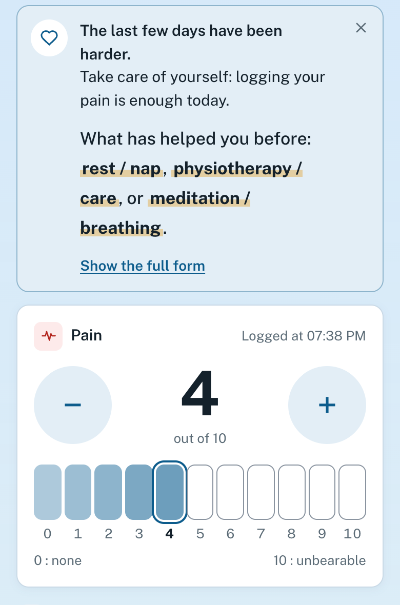
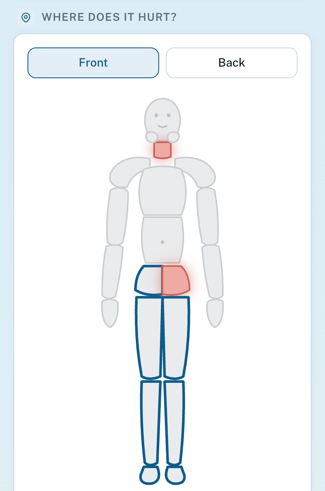
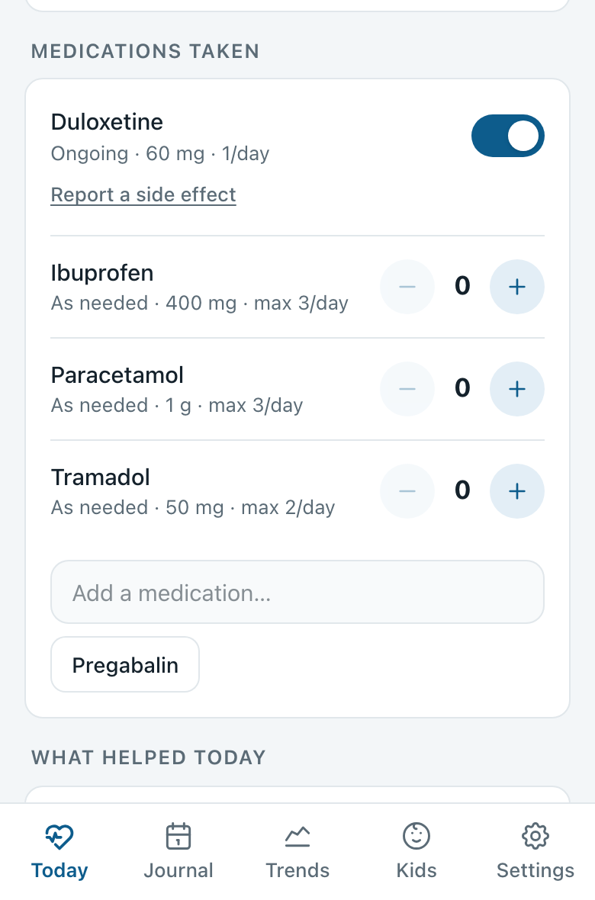
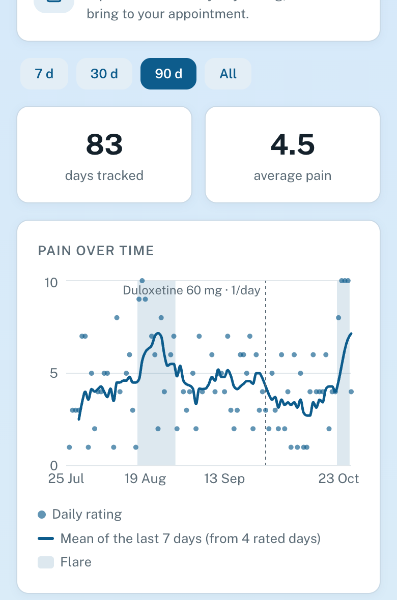
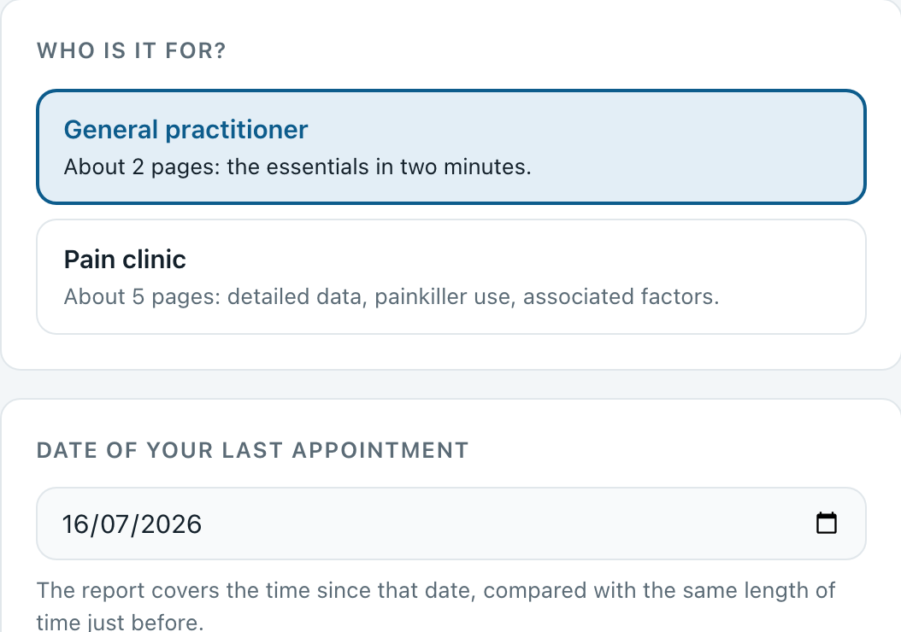
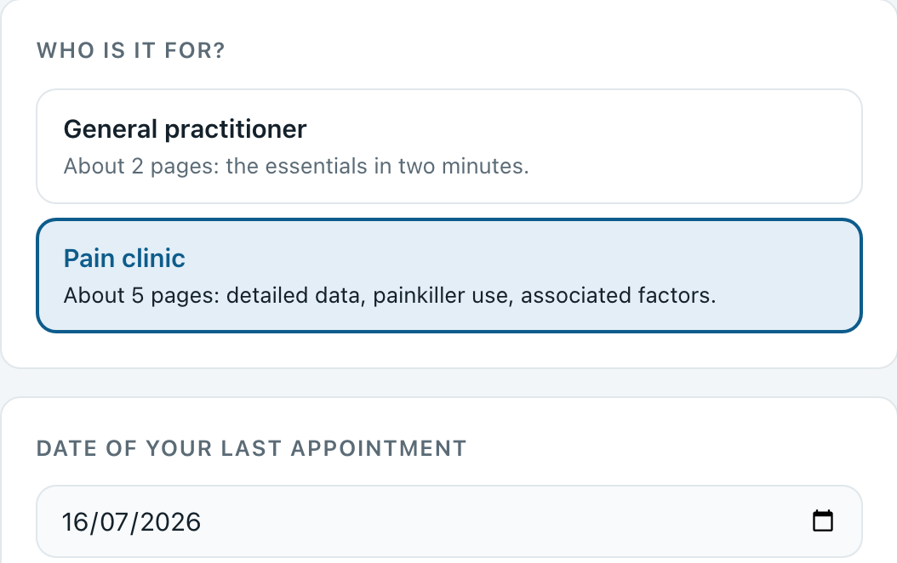

For healthcare professionals
One minute a day for the patient, two minutes of reading for you.
A free, open-source pain diary for fibromyalgia and other chronic pain. The patient logs their day in under a minute on their phone, with no account; their data stays on the device. From it they produce a report for the appointment, which describes the data without interpreting it.
Figures recorded day by day, rather than an account from memory. A comparison with the previous period, the days clearly more painful than usual, the treatments taken with the relief and side effects reported, and the question the patient wants to ask. Support for history-taking, not decision support.




| The patient logs |
|---|
| Pain of the day, 0 to 10: the only entry a day needs to count.Numeric scale recommended for intensity[1][3]. Rated day by day: recalling a single day is more faithful than recalling the week[6]. |
| Where it hurts, across 13 areas.Location and spread, day by day. Self-reported, not a classification criterion. |
| Fatigue, sleep, brain fog, mood, stress, activity, 0 to 10.Tracked alongside pain. Simple, unvalidated scales. Sleep and pain affect each other in both directions[14]. |
| Treatments, regular or as needed.Dose actually taken, missed days, as-needed doses, relief, dated side effects, dose changes. |
| What helped, in one tap.The non-drug approaches the patient notices for themselves. |
| Weather, cycle, note, optional.Leads the patient wants to test; the link between weather and pain remains inconsistent[7][11–13]. |
Pain alone is enough for a day to count. During a flare, the screen shrinks to pain; the rest is offered afterwards, without pressing.
References numbered as in the methodology note: [1] IMMPACT · [3] HAS · [6] Broderick · [7][11–13] weather · [14] Finan.


The patient chooses a version (French or English) and the date of their last appointment: the report covers the time since that date and compares it with the same length of time just before.
Days without an entry are never filled in. The PDF is built on the phone; name and date of birth are not stored.
Data in their browser: no account, nothing sent apart from the optional weather lookup. Encrypted backup (password of their choice), optional code lock.
Free software (CeCILL v2.1), public code. 313 automated tests check the calculations and the app.
Self-reported data. Fatigue, sleep and mood scales unvalidated. The flare definition is OUCH’s own, with no consensus.